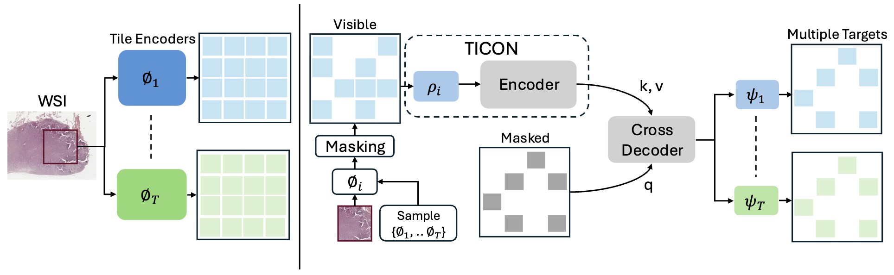
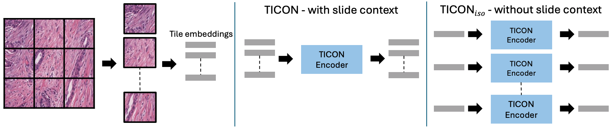
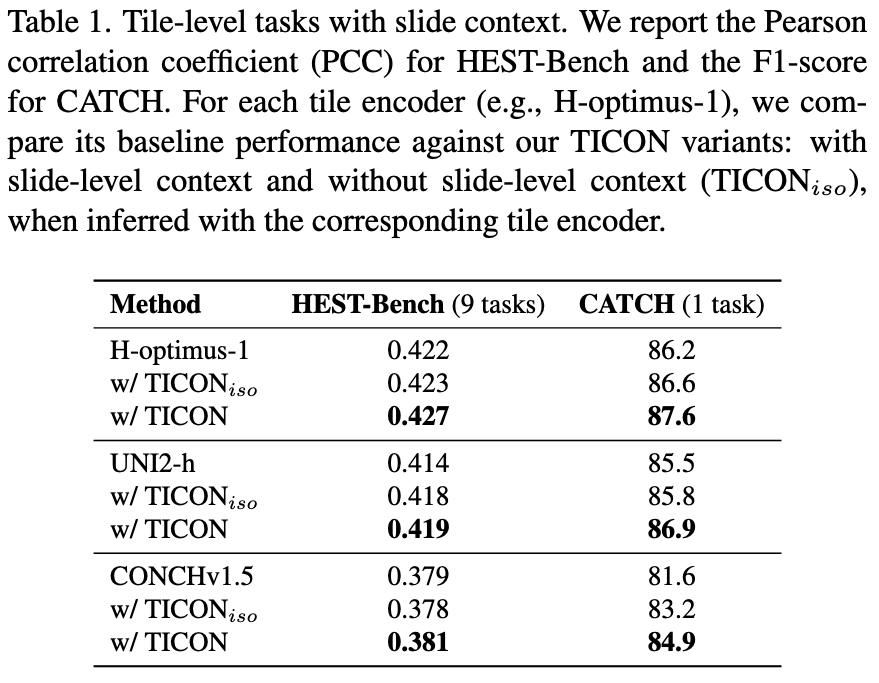
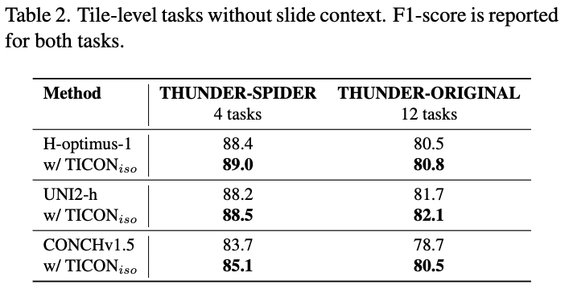
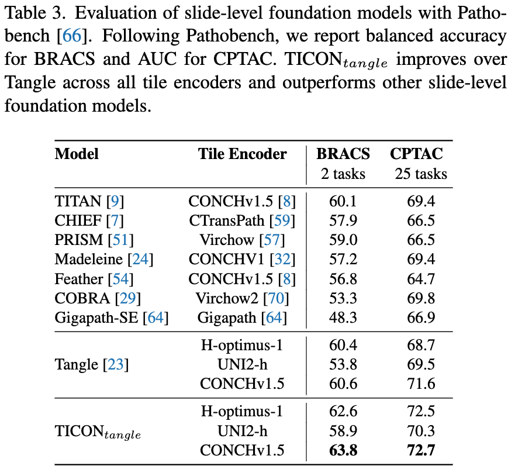
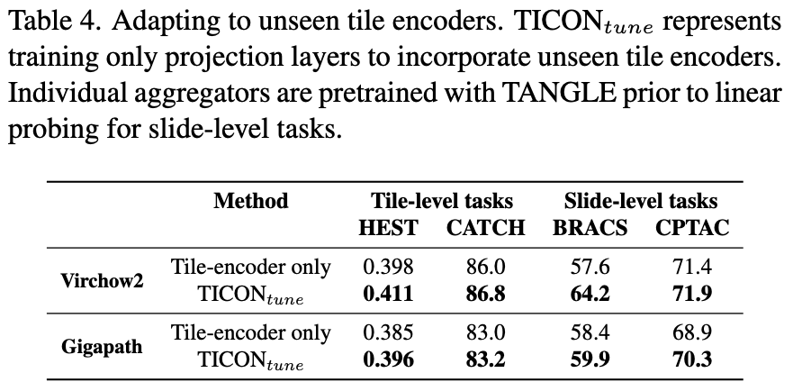
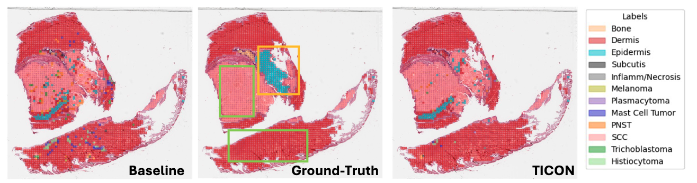

Abstract
The interpretation of small tiles in large whole slide images (WSI) often needs a larger image context. We introduce TICON, a transformer-based tile representation contextualizer that produces rich, contextualized embeddings for ``any'' application in computational pathology. Standard tile encoder-based pipelines, which extract embeddings of tiles stripped from their context, fail to model the rich slide-level information essential for both local and global tasks. Furthermore, different tile-encoders excel at different downstream tasks. Therefore, a unified model is needed to contextualize embeddings derived from ``any'' tile-level foundation model. TICON addresses this need with a single, shared encoder, pretrained using a masked modeling objective to simultaneously unify and contextualize representations from diverse tile-level pathology foundation models. Our experiments demonstrate that TICON-contextualized embeddings significantly improve performance across many different tasks, establishing new state-of-the-art results on tile-level benchmarks (i.e., HEST-Bench, THUNDER, CATCH) and slide-level benchmarks (i.e., Patho-Bench). Finally, we pretrain an aggregator on TICON to form a slide-level foundation model, using only 11K WSIs, outperforming SoTA slide-level foundation models pretrained with up to 350K WSIs.
Pretraining: Omni-Feature Masked Modeling

Overview of the pretraining framework. (Left) Grid sampling and tile embedding extraction using a set of tile encoders (φ1, φ2, .., φT). (Right) An input tile encoder (φi) is sampled randomly at each iteration, and its embeddings are masked. The remaining visible embeddings are passed through a φi-specific input projector (ρi) and then a shared encoder. A shared decoder, paired with output projectors specific to each tile encoder, then reconstructs the masked embeddings corresponding to all tile encoders (φ1, .., φT).
Inference Modes

Overview of TICON's inference modes. (Left) Standard preprocessing pipeline: tiling the WSI followed by embedding extraction. (Middle) Contextualized Inference: The default mode where the entire sequence of WSI tile embeddings is passed through the TICON Encoder. This allows the model to contextualize each tile with information from the full slide-level neighborhood. (Right) Isolated Inference: An alternative inference mode where a single tile embedding is passed through TICON independently. In this setting, the Transformer effectively functions as a deep MLP (sequence length of 1). Although not the primary design intent, we empirically discovered that TICON exhibits an emergent property in this mode, enhancing individual tile representations even when slide-level context is unavailable (e.g., in the THUNDER benchmark).
Tile-level tasks with Slide Context

Tile-level tasks without Slide Context

TICON as Slide-level Foundation Model

Adapting to unseen Tile encoders

Visualization
